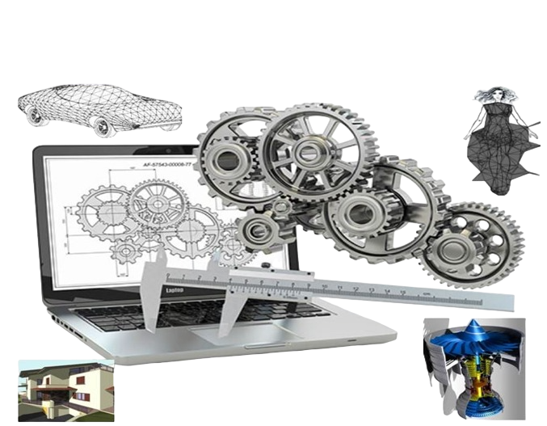
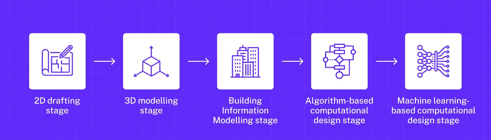
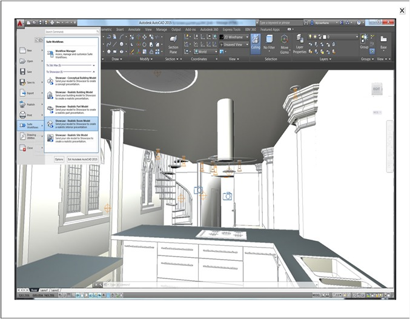
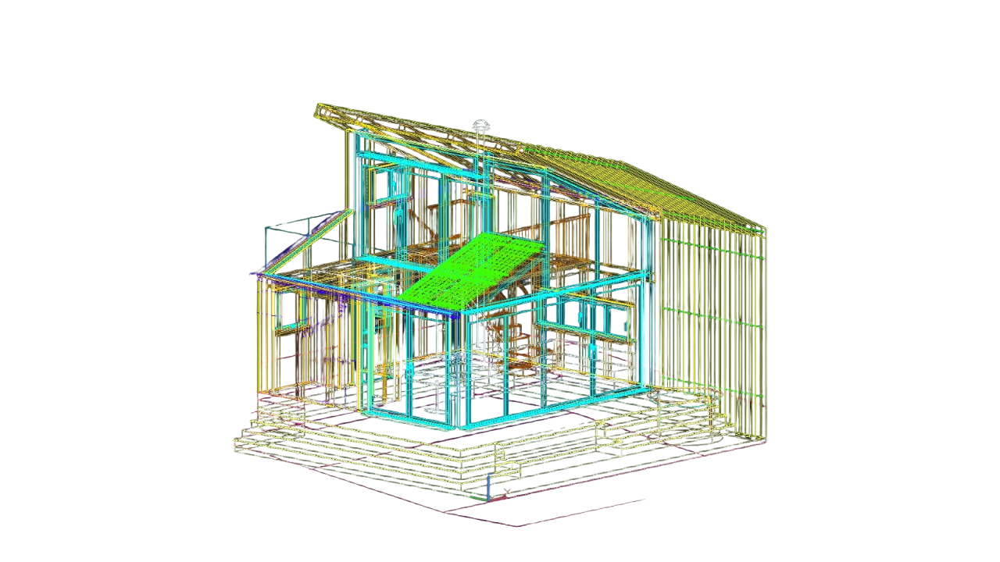
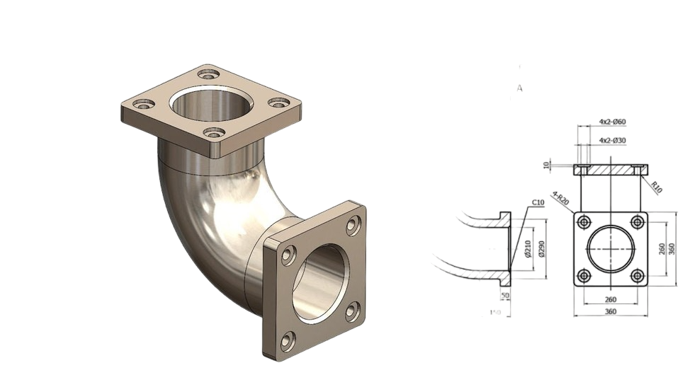
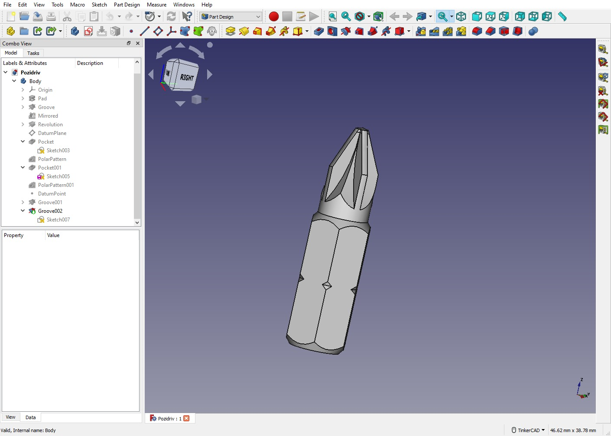
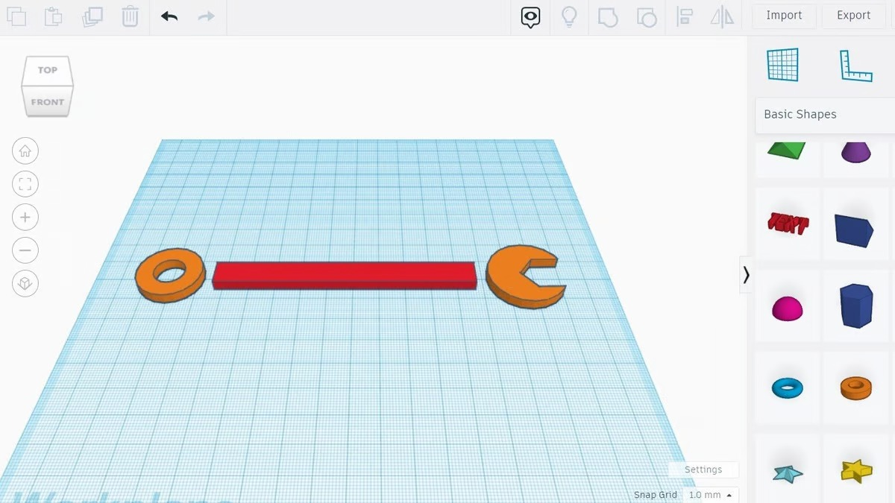
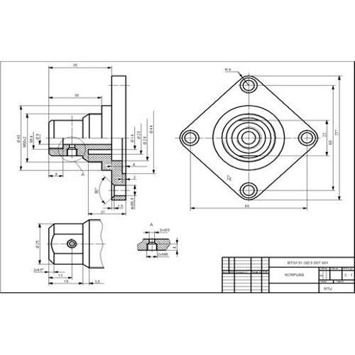
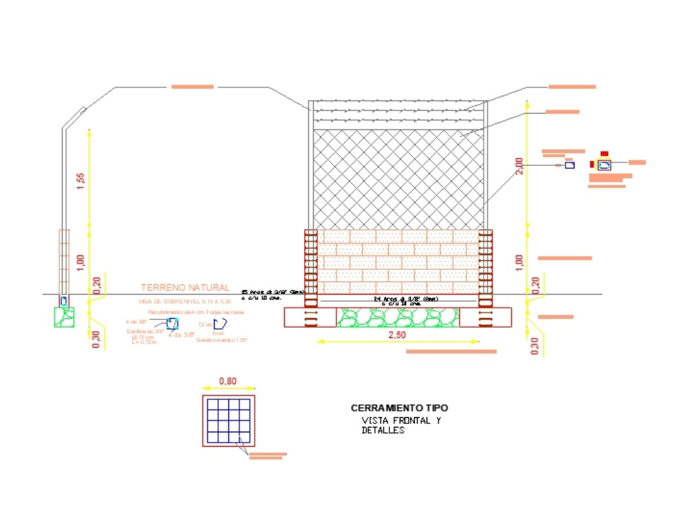
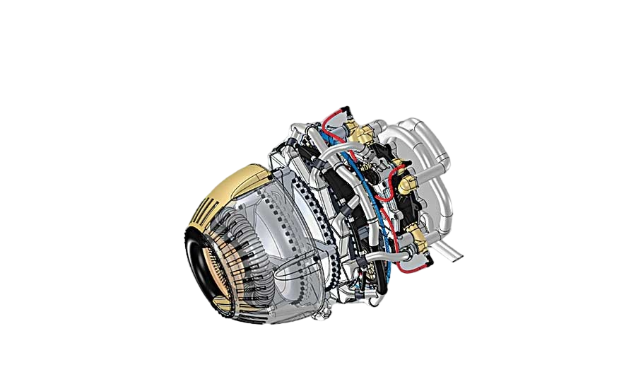

Introduction To CAD
In computer graphics we are generally concerned with images drawn on display screens. (Hard copies can
then be made of these images if needed, using various types of plotting device.) There are several ways in
which these images can be constructed and different types of display device use a range of imaging
techniques to achieve acceptable visual representations.
In modem industry, the computer supports all the design and manufacturing functions. The concept of a
common database has effectively integrated these engineering functions and requires the engineer to be
aware of the ramifications of changes anywhere in the design and manufacturing process.
The link between the area of drawing and design and analysis is very strong. Computer aided design and
drawing systems provide the means to generate 3D models with the computer and from those models
generate drawings for manufacturing. Computer aided drawing is a technique to produce engineering
drawings with the assistance of a computer.

How is CAD used for
CAD design is used by architects, construction managers, and engineers and has replaced manual drafting. It helps users create designs in either 2D or 3D to visualize construction, and enables the development, modification, and optimization of the design process.This helps designers make more accurate representations and modify them more easily to improve design quality.

How does computer-aided design work?
A standard CAD system requires the installation of a CAD software package and, occasionally, a graphics card on your computer to work. The graphics kernel is the brains of a CAD software application. The graphical user interface (GUI) is another crucial component of CAD software. The GUI is used to display the CAD geometry and collect user input.
Developing computer models with geometrical constraints is known as computer-aided design (CAD). These models often provide a three-dimensional representation of a component or a whole system on a computer screen. Developers can easily modify the model by altering the suitable parameters, which makes life easier for designers and engineers.
The mouse and keyboards are often used as input devices, and trackballs and digitizers are also occasionally utilized. The GUI transfers the input from the input devices to the graphics kernel in an appropriate format. The graphics kernel creates the geometric entities and instructs the graphics card to show them on the GUI.

Design engineers may plan and create their work on a computer screen with CAD, print it, and save it for upcoming revisions. The objects of traditional drafting are represented by CAD software for a mechanical design using either vector-based visuals or, in some cases, raster graphics that show the overall appearance of planned things. It involves more than simply forms, though.
According to application-specific norms, the CAD output must express information, such as materials, procedures, measurements, and tolerances, just like hand drafting of technical and engineering drawings. The software also considers the interactions between various materials and stakeholders, which is particularly important as more specifics are added to the drawings by subcontractors.
Examples of CAD
 When incorporated into patent applications, CAD designs are beneficial in securing goods and inventions. These often-used software tools can assist you in creating construction documentation, exploring design concepts, visualizing ideas through photorealistic renderings, and simulating how a design would function in real life. Let’s take a look at the five best CAD software to use:
When incorporated into patent applications, CAD designs are beneficial in securing goods and inventions. These often-used software tools can assist you in creating construction documentation, exploring design concepts, visualizing ideas through photorealistic renderings, and simulating how a design would function in real life. Let’s take a look at the five best CAD software to use:
1. AutoCAD:

One of the first CAD software to hit the market was AutoCAD from Autodesk, which has a strong reputation in several industries. This CAD program is used for 2D and 3D drafting and design. It can produce designs, equipment layouts, section planes, model documentation, and more. The secret to success is mastering AutoCAD and other 3D CAD programs. The software is designed for experts with backgrounds in algorithmic model programming.
2.SolidWorks:

Professional 3D designers frequently utilize this Dassault Systèmes product. It is a feature-based, parametric model. Employers usually look for candidates with SolidWorks knowledge because it is a well-known mechanical design software with a sizable user base. This 3D modeling CAD software is widely utilized in the mechanical engineering and design fields. A variety of capabilities, including tools for design validation or reverse engineering, are included in the Solidworks software.
3. FreeCAD:

FreeCAD is an open-source parametric modeler that excels in all vital CAD applications, including product design, mechanical engineering, and architecture. Developers used Python to build the top layers of FreeCAD, which is already equipped with program customization features. You can use the 2D forms you create with FreeCAD as a starting point to design other items. It’s a multiplatform (Windows 11, Mac, and Linux), highly customizable, and extendable piece of software.
4. TinkerCAD:

A web browser-based 3D modeling tool called Tinkercad is available online and is free to use. It gained popularity as a tool for making models for 3D printing since it became accessible in 2011. Constructive solid geometry (CSG), based on this CAD program, enables users to combine more direct items to produce complicated models. Additional features of Tinkercad include incorporating electronic circuits and writing programs.
Inventor:
The Autodesk-provided CAD software is a powerful program built specifically for mechanical design, making it a specialized tool for 3D design, documentation, and product simulation. With integrated tools for sheet metal, frame, tube, and power design, the software Inventor combines parametric, direct, free-form, and rule-based design functions. Additionally, this CAD software facilitates the interchange of ideas via a secure cloud-based service and links designs with incoming client data.
Types of CAD
Computer-aided design (CAD) consists of two broad types – 2D and 3D. However, you can further categorize them into the following:
1. 2D CAD

Early in the 1970s, 2D CAD, the industry’s first CAD program, was created. At that time, large aerospace, automotive, and other engineering businesses developed internal technologies to automate repetitive drafting tasks. To make flat drawings, 2D CAD uses fundamental geometric shapes like lines, rectangles, circles, etc.
This is the earliest iteration of CAD that most people are familiar with. The use of text, dimensions, leaders, and tables as annotations on drawings is another feature of 2D CAD software. 2D CAD is used to design, plan, section, elevation views, and detail structures in the built environment. Additionally, they convey how various components work together to form assemblies and offer crucial inspection locations.
A library of geometric images, the capacity to design Bezier curves, splines, and polylines, the ability to specify hatching patterns, and the ability to generate a bill of materials are all standard features of 2D CAD systems. AutoCAD, CADkey, CATIA v4, and Medusa are some of the well-known 2D CAD applications.
2. 2.5D CAD

2.5-D CAD is a medium-level CAD between 2D and 3D. Because they depict the depth of the objects, the prismatic models are produced by this kind of CAD. These items’ components are geometric shapes, just like in 2D CAD. Even if the object is three-dimensional, there cannot be any overhanging parts, which is what is meant when a surface is described as 2.5D. The height of the item (i.e., thickness or depth) at each place is commonly depicted for objects of this type using a contour map. Although they are on solitary planes, Z levels do exist.
3. 3D CAD

There are several distinct kinds of three-dimensional (3D) CAD software, each designed for a different application and level of detail. 3D CAD has grown in popularity as a design tool as computer processing power and graphic display capabilities have improved.
There are numerous versions of three-dimensional (3D) CAD software designed for various applications and levels of detail. In general, 3D CAD software produces a realistic representation of the design object, enabling designers to address potential issues earlier and with lower production costs. Inventor by Autodesk, VX CAD, and CATIA V5 are a few 3D CAD applications, and there are many software as a service (SaaS) apps for 3D CAD.
4. CAD using neutral file formats
These file types were developed to allow sharing between various software. As a result, interoperability is improved, which is essential. A neutral file format that any other software business may easily understand was required. Operating between several software packages is possible with CAD agnostic file formats. When you don’t want to spend money on additional CAD software, it’s pretty helpful.
They dismantle barriers and promote greater levels of collaboration. The most popular today are the CAD-neutral file types STEP, IGES, 3D PDF, JT, STL, ACIS, PARASOLID, and QIF file types. These CAD-neutral file formats do a great job of tearing down barriers, but not all of them are made equal.
5. CAD using native file formats
Native CAD Formats are formats that are exclusive to particular CAD systems. The term “native CAD Formats” describes file types exclusive to particular CAD applications. Compared to Neutral CAD formats and Geometric Modeling Kernel CAD formats, if you can understand them, they will include the most data and be the most accurate.
One should utilize only the software included with such CAD file types. Any other software that uses their CAD formats cannot access them. The use of a proprietary file type is common across all CAD design programs. These file types are typically only viewable with the same program that created them.